Motif / Tile / Pattern Motifs are complete uncropped constructions. Tiles use square repeat construction where geometry allows; rectangular exceptions preserve the existing shapes. Pattern repeats the displayed tile at density 12. Each image links to its standalone SVG.
asanoha / default motif 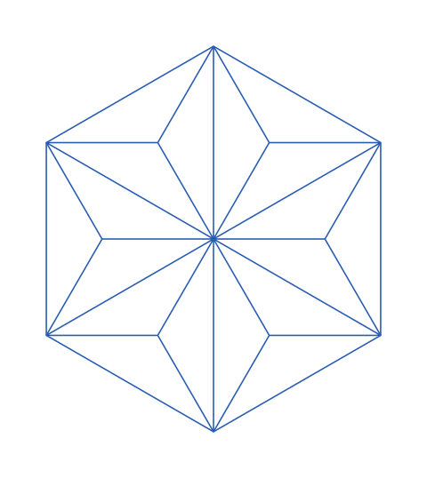
One complete six-sector hemp-leaf rosette, assembled from the lattice's subdivided triangles. tile 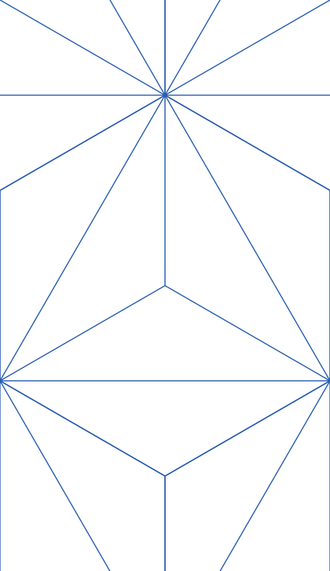
Rectangular repeat tile preserves this construction. A square crop would introduce seams or distort the pattern. pattern 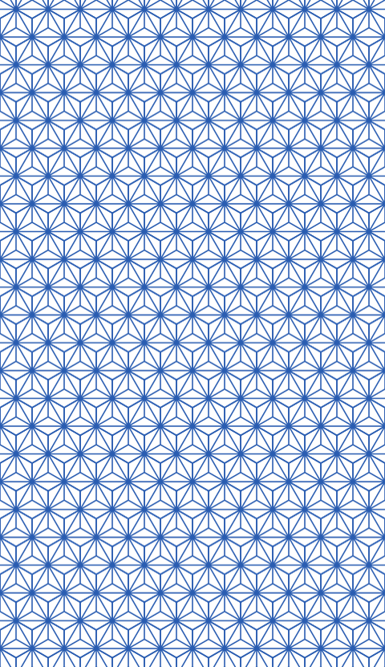
Rectangular repeat tile preserves this construction. A square crop would introduce seams or distort the pattern. yagasuri / default motif One complete arrow-feather pair; alternating direction and stagger belong to the repeat. tile Square repeat tile. Cropped edge fragments complete when adjacent copies meet. pattern 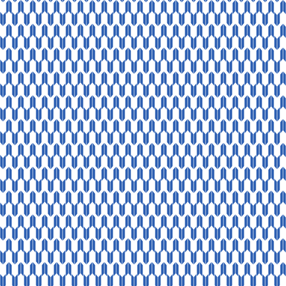
Square repeat tile. Cropped edge fragments complete when adjacent copies meet. seigaiha / default motif 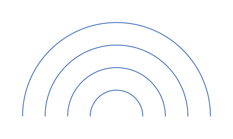
One complete four-ring fan, before neighboring fans overlap it. tile 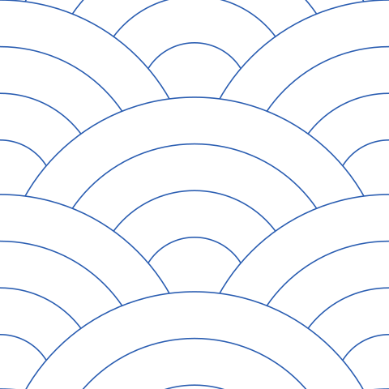
Square repeat tile. Cropped edge fragments complete when adjacent copies meet. pattern 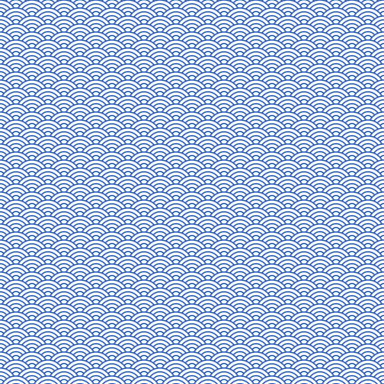
Square repeat tile. Cropped edge fragments complete when adjacent copies meet. ichimatsu / default motif One complete square. Alternating colors belong to the tile. tile Square repeat tile. Cropped edge fragments complete when adjacent copies meet. pattern 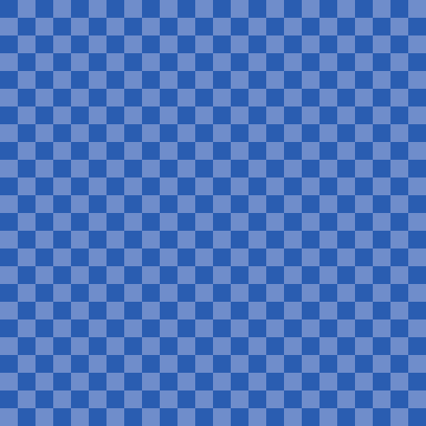
Square repeat tile. Cropped edge fragments complete when adjacent copies meet. ichimatsu / reference motif One complete square. Alternating colors belong to the tile. tile Square repeat tile. Cropped edge fragments complete when adjacent copies meet. pattern 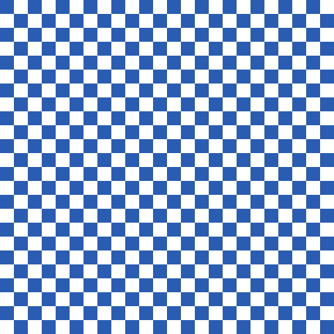
Square repeat tile. Cropped edge fragments complete when adjacent copies meet. shippo / default motif One complete four-lens composition. tile Square repeat tile. Cropped edge fragments complete when adjacent copies meet. pattern 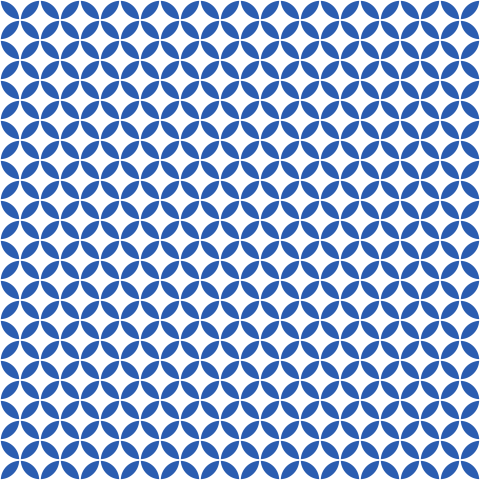
Square repeat tile. Cropped edge fragments complete when adjacent copies meet. kikko / default motif 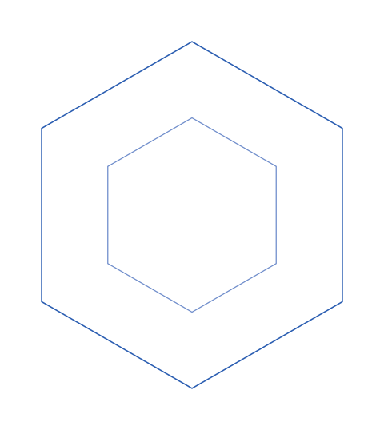
One complete pair of nested hexagons. tile 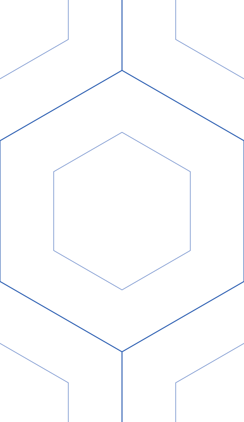
Rectangular repeat tile preserves this construction. A square crop would introduce seams or distort the pattern. pattern 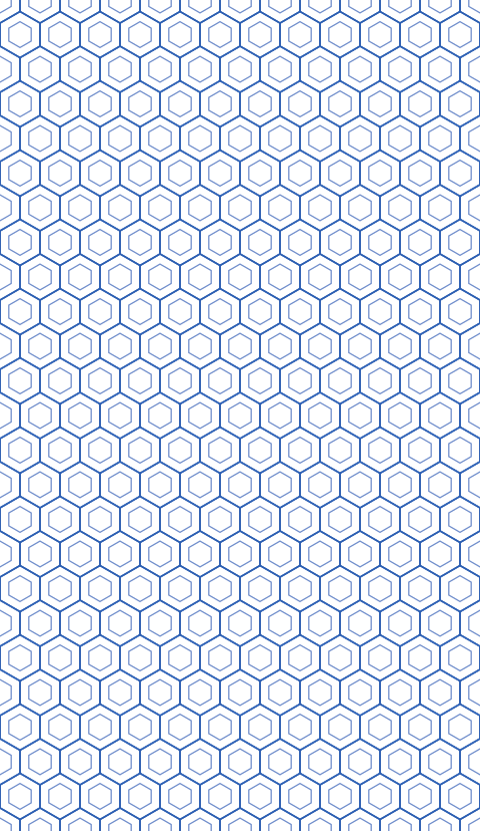
Rectangular repeat tile preserves this construction. A square crop would introduce seams or distort the pattern. karakusa / default motif 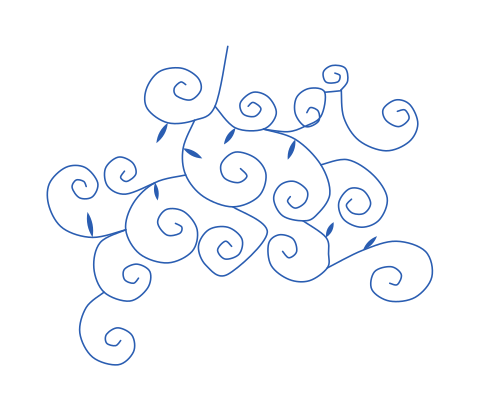
One connected vine branch, with the periodic stem opened once. The continuous pattern has no unique isolated motif. tile Rectangular repeat tile preserves this construction. A square crop would introduce seams or distort the pattern. pattern 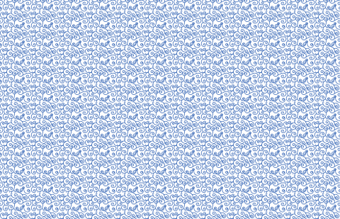
Rectangular repeat tile preserves this construction. A square crop would introduce seams or distort the pattern. uroko / default motif 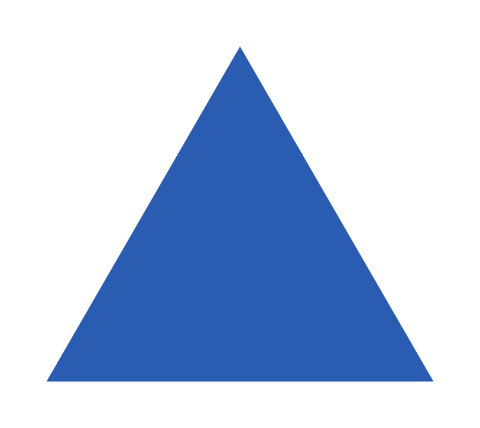
One complete equilateral scale. Alternating color and row offsets belong to the repeat. tile Rectangular repeat tile preserves this construction. A square crop would introduce seams or distort the pattern. pattern 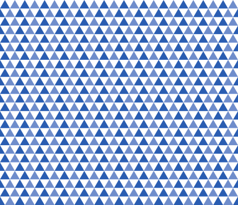
Rectangular repeat tile preserves this construction. A square crop would introduce seams or distort the pattern. mameshibori / default motif 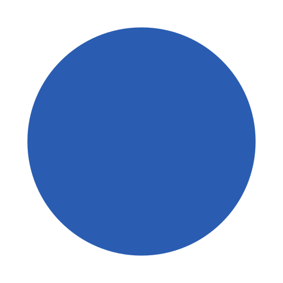
One complete dot; the original variant's size hierarchy belongs to the tile. tile Square repeat tile. Cropped edge fragments complete when adjacent copies meet. pattern 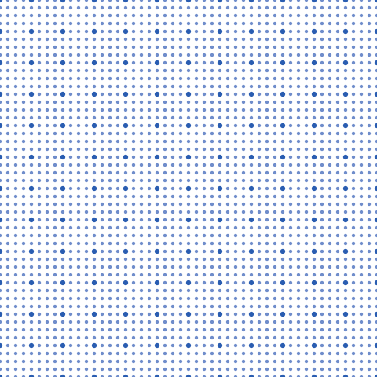
Square repeat tile. Cropped edge fragments complete when adjacent copies meet. mameshibori / reference motif One complete dot; the original variant's size hierarchy belongs to the tile. tile 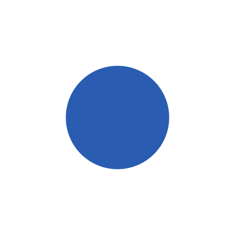
Square repeat tile. Cropped edge fragments complete when adjacent copies meet. pattern 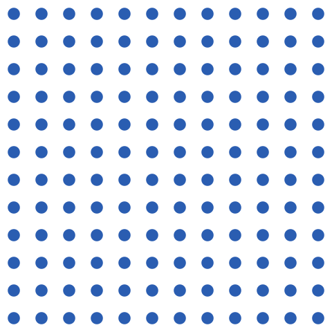
Square repeat tile. Cropped edge fragments complete when adjacent copies meet.